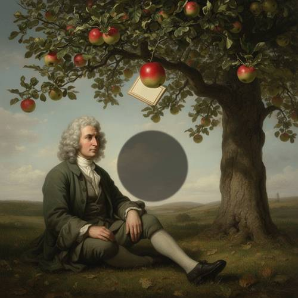
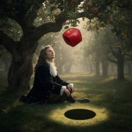
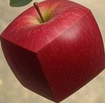
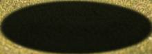

Logical Reasoning — Please generate a surrealist photo of Newton sitting under an apple tr
Please generate a surrealist photo of Newton sitting under an apple tree, a square apple falling from the tree, but its shadow is a perfect circle.

Direct — one call, no iterationContinuum — Kimi K3 + FLUX.2-dev
Judge — Direct
FAILLogical Reasoning — The image fails to depict the logical relationship requested in the prompt. It does not show a square apple, nor does it show an object casting a shadow that is a perfect circle. Instead, there is a large, opaque, perfect circle floating in mid-air as a separate entity, not as a shadow cast by any object.
PASSWorld Knowledge — The image depicts a man who strongly resembles historical portraits of Isaac Newton, with a long white wig and 18th-century clothing, sitting under an apple tree, which aligns with the well-known anecdote associated with him.
FAILAttribute - Shape — The image does not contain a square apple; all the apples visible on the tree and on the ground are round. It does, however, contain a large, dark, perfect circle floating in the scene, but the required 'square apple' is missing.
FAILCompound - Imagination — The core imaginative concept of a square apple casting a physically impossible perfect circle shadow is not present in the image. There is no square apple, and the circle shown is not a shadow.
FAILStyle — The image is in a classical or neoclassical painterly style, not a photographic style as requested. While it incorporates surreal elements like the floating circle, it fails to adhere to the 'photo' medium specified in the prompt.
Judge — Continuum
PASSLogical Reasoning — The image correctly depicts the logical contradiction requested in the prompt. A red, square-shaped apple is shown hovering above the ground, while its shadow on the grass below is a perfect circle.
PASSWorld Knowledge — The image features a man with long, wavy hair, wearing a dark coat and a white frilly cravat, which is consistent with popular historical depictions of Isaac Newton.
PASSAttribute - Shape — The image clearly shows two specific shapes: a red apple that is distinctly square or cube-shaped, and a shadow on the ground that is a perfect circle.
PASSCompound - Imagination — The image successfully visualizes the impossible, imaginative concept of a square object (the apple) casting a shadow of a completely different shape (a perfect circle).
PASSStyle — The image has the high-detail, realistic lighting and texture characteristic of a photograph, but the subject matter—a cubic apple casting a circular shadow—is impossible, thus fulfilling the 'surrealist photo' style requirement.
What the agent did
Thinking
The user wants a surrealist photo: Newton under an apple tree, a square apple falling, but its shadow is a perfect circle. Generate with flux2-dev.
Step 1 — `generate_image`
{
"prompt": "Surrealist fine-art photograph: Isaac Newton in 17th-century attire with long hair and a dark velvet coat sits beneath a gnarled apple tree in an English orchard, looking up thoughtfully. Above him, a single cubic, perfectly square red apple falls from a branch, frozen mid-air with slight motion. On the grass below, the falling square apple casts a shadow that is a perfect crisp circle. Dappled late-afternoon sunlight, atmospheric haze, soft depth of field, rich chiaroscuro lighting, cinematic surrealist photography, Magritte-like visual paradox, highly detailed.",
"model": "flux2-dev"
}
Result img_0

Thinking
The image looks quite good. Square red apple falling, Newton seated under the tree, and a circular dark shadow on the grass below. Let me check details: the shadow looks like a dark ellipse/circle — looks almost like a hole. It reads as a perfect circle (in perspective it appears elliptical, which is natural for a circle on ground). The square apple looks great. Newton looks good. Let me inspect the apple and shadow regions to verify.
Model
The first generation came out remarkably close to the prompt. Let me zoom in on the key surreal elements to verify them.
Step 2 — `inspect_region`
{
"image": "img_0",
"roi": "the falling square apple"
}
Result img_1

Step 3 — `inspect_region`
{
"image": "img_0",
"roi": "the circular shadow on the grass"
}
Result img_2

Thinking
The apple is a beautiful cubic apple — great. The shadow is a perfect dark ellipse on the grass, which is how a circle would appear in perspective. All elements are present: Newton seated, square apple falling, circular shadow. This is good enough to mark and stop. Mark img_0 as best.
Step 4 — `mark_best`
{
"image": "img_0",
"reason": "All requested elements present and well rendered: Newton in period attire seated under a gnarled apple tree, a distinctly cubic red apple falling mid-air, and a perfect circular dark shadow on the grass below \u2014 the surrealist paradox reads clearly."
}
Model
The image is complete and matches your prompt: - **Newton** sits beneath a gnarled apple tree in 17th-century attire — dark velvet coat, white cravat, long hair — gazing up thoughtfully. - **A perfectly square red apple** hangs frozen mid-fall from the branch above him, complete with a stem and flat cubic faces. - **The shadow it casts on the grass is a perfect circle** — a crisp dark disc that visually contradicts the cubic fruit, delivering the surrealist, Magritte-like paradox you asked for. The atmospheric haze, dappled orchard light, and chiaroscuro mood give it that dreamlike fine-art photography quality. The result is marked as the final image.